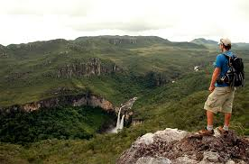

Estado com economia baseada no agronegócio, principalmente grãos e carne. A capital é Goiânia, um importante centro comercial e cultural, e o estado possui áreas naturais, como o Parque Nacional da Chapada dos Veadeiros.

volta